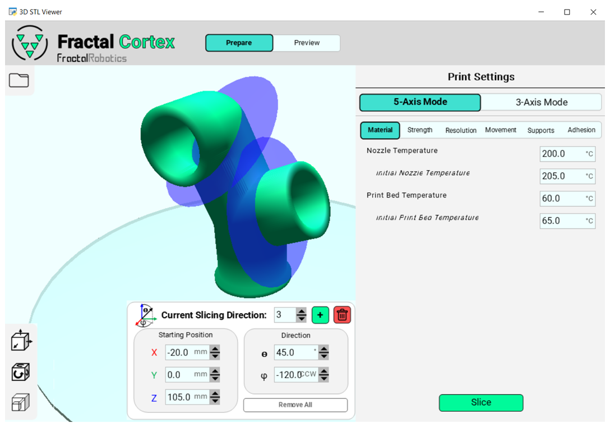

Fractal Cortex
Fractal Cortex is an open-source multidirectional 5-axis slicer application.
Capabilities
- Compatible with the Fractal 5 Pro
- Intuitive User Interface
- Slice Parts in Multiple Different Directions
- Collision Prevention Between Print Bed/Nozzle and In-Process Part/Nozzle
- Backwards Compatible with 3-Axis FDM
To download Fractal Cortex, visit the GitHub repository by clicking the button below.